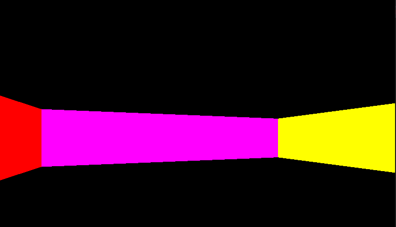
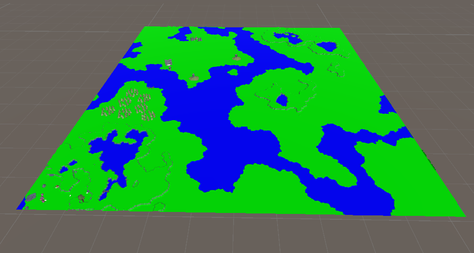
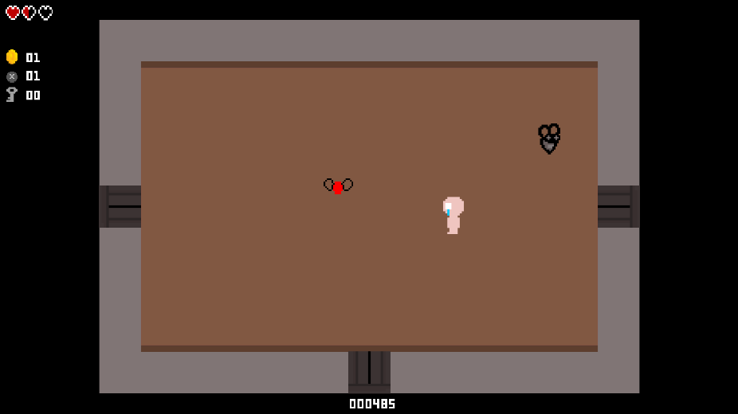
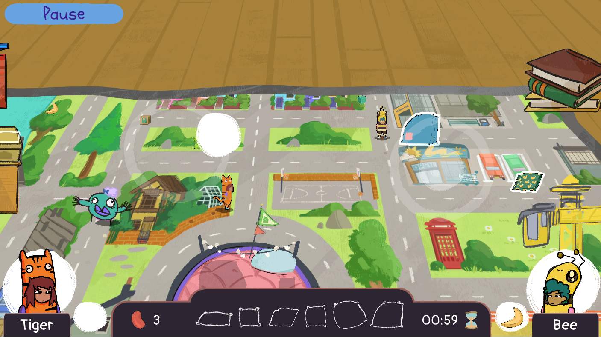

PROJECTS
Procedural Generation of Cityscapes

My final year dissertation project focused on using the WaveFunctionCollapse algorithm to procedurally generate 3D cityscapes. The system generates a grid of a given size which can then be filled in with tiles, either by user or by the algorithm itself.
Kojima Wars

Taking inspiration from games such as Herzog Zwei, Kojima Wars is a project undertaken as part of a large cohort in which we created a networked multiplayer first-person shooter. Players take control of mechs that can transform between fight and flight mode with the goal for each team being to capture the majority of the bases to gain the most points before the end of the round.
DirectX11 First-Person Shooter
An attempt to create a first-person shooter in the style of old school shooters such Wolfenstein 3D, within DirectX11. While this project may not have been as complete as I would have liked, it game me a lot of low level C++ experience.
Open world Streaming
A task to research and develop a method of streaming in an open world environment at runtime. To achieve this, a map is generated using a heightmap texture which is then split into world chunks, when the player gets close enough to one of these chunks it loaded. When the player moves far enough away from the chunk it and any of the objects in that chunk are unloaded.
Binding of Isaac Demake
A small group task to demake a modern title to the look and feel of an atari-era game.
Wonzie World
Work on Wonzie World began as summer work in which I ported the game from PC to mobile. This involved adding a new control scheme to allow for touch control and adding alternate methods for users to do stuff such as pausing the game with on screen UI. After the porting was complete I took on additional tasks such as bug fixing pre-exisitng problems within the codebase and adding features such as volume control.